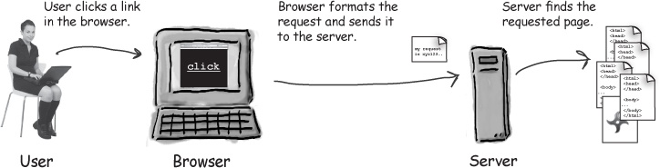

Web Client: The User’s Gateway to the Internet
A web client is any software or application that communicates
with a web server to request, retrieve, and display content from the web.
In simpler terms, it's the tool you use to browse the internet, with the
most common example being a web browser like Google Chrome,
Mozilla Firefox, or Safari.
How a Web Client Works
When you access a website, your web client sends a request to the web
server, asking for specific resources (like a webpage, an image, or a
file). The server processes this request and sends the requested data back
to the client, which then renders it in a format that’s easy for users to
understand.
Here’s the basic flow:
-
Request: The web client sends an HTTP request to the
server when you enter a URL or click a link.
-
Receive: The server responds with the necessary data,
often in the form of HTML, CSS, JavaScript, or other resources.
-
Display: The web client processes the response and
displays the webpage, media, or application for the user.

Types of Web Clients
-
Web Browsers: The most common web clients, browsers
interpret and display web content, allowing users to navigate the
internet.
-
Mobile Apps: Many mobile applications interact with web
servers to fetch data, display content, or provide online services.
-
Web APIs: These are interfaces that allow software
applications to communicate with web servers, often used for data
exchange or integration.
Key Features of Web Clients
-
User Interface: Web clients are designed to provide an
intuitive interface for users, making it easy to interact with websites
or web-based applications.
-
Interactivity: A good web client supports a wide range
of interactions, from clicking buttons and submitting forms to running
scripts and accessing multimedia content.
-
Security: Modern web clients implement various security
measures, such as checking for HTTPS connections, blocking unsafe
content, and managing cookies or other session data.
-
Cross-Platform Functionality: Web clients are designed
to work across multiple devices and operating systems, ensuring that
websites are accessible from desktop computers, laptops, smartphones,
and tablets.
The Role of Web Clients in Web Development
Web clients play a crucial role in the client-side (or front-end) part of
web development. This is the layer where HTML, CSS, and JavaScript come
together to create interactive, user-friendly web pages that are delivered
and interpreted by the browser. Developers must ensure that the code they
write works smoothly across different web clients to ensure compatibility
and optimal user experience.